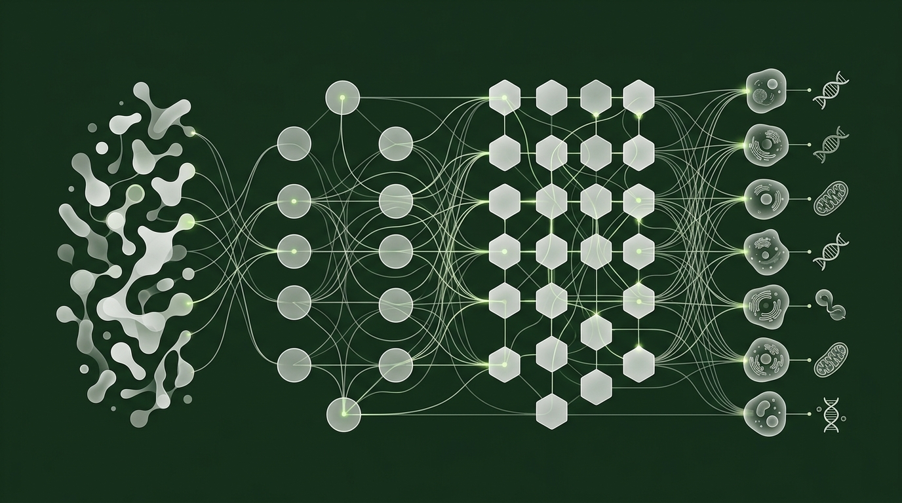

We Do Not Practice Medicine. We Practice Health.
Find the Root. Restore the System. Reclaim Your Health.
Functional medicine applies systems biology to identify and address the underlying drivers of chronic illness — not just its symptoms. At Odin Lab, we pair advanced diagnostics with personalized protocols to produce measurable, lasting change.

The Five Foundations of Functional Medicine
A coherent philosophy that reframes how illness is understood, investigated, and resolved — not merely managed.
Root Cause Over Symptom Management
Functional medicine does not ask "what drug matches this symptom?" It asks why the symptom exists. Every symptom is a signal — a downstream expression of upstream dysfunction in biochemistry, gut integrity, hormones, or environmental load. Treatment targets the source.
Systems Biology — The Body as an Interconnected Network
The body is not a collection of isolated organs. Gut health influences hormone metabolism. Hormone dysregulation alters immune signaling. Immune activation drives neurological and metabolic consequences. Functional medicine maps these interconnections and treats the network, not individual nodes.
Biochemical Individuality
Genetic makeup, environmental exposures, stress history, and nutritional status combine uniquely in each person. Standard reference ranges reflect population averages — not optimal function for you. Functional medicine interprets labs through optimal, not merely "normal," ranges and builds protocols calibrated to the individual.
Patient-Centered Partnership
Patients are not passive recipients of prescriptions. Functional medicine requires understanding a person's history, environment, lifestyle, and health goals in full. Decisions are made collaboratively. Education is built into care. The patient becomes a participant in their own recovery.
Health as a Positive State — Not the Absence of Disease
Conventional medicine defines health as the absence of diagnosable pathology. Functional medicine defines health as active vitality, organ resilience, and optimized physiological function. The goal is not to avoid a diagnosis — it is to build a body that functions at a genuinely high level.
Functional Medicine vs. Conventional Medicine
Same body. Radically different questions. Radically different outcomes.
| Dimension | Conventional Medicine | Functional Medicine |
|---|---|---|
| Approach | Symptom identification and suppression | Root cause discovery and resolution |
| Focus | Disease diagnosis and management | Health optimization and chronic illness reversal |
| Timeline | Optimized for acute and emergency care | Designed for chronic, complex, multi-system conditions |
| Diagnostic Tools | Standard blood panels, imaging, anatomical assessment | Advanced biomarkers, functional lab ranges, hormone panels, microbiome analysis, organic acids |
| Outcome Goal | Manage the condition; maintain stability | Resolve the underlying drivers; reduce or eliminate dependency on symptom-suppressing medications |

Advanced Diagnostics We Use
Standard panels surface pathology. Functional panels surface early dysfunction — years before disease is established. These are the tools we use to find what's driving your symptoms.
Advanced Comprehensive Blood Panel (Functional Ranges)
Standard blood panels are read against population reference ranges that flag only frank pathology. Functional medicine interprets the same markers — glucose, TSH, liver enzymes, lipids, CBC — against tighter optimal ranges that surface early dysfunction before disease is established. For example, a TSH of 1.0–2.5 mIU/L is the functional target, versus the conventional threshold of up to 4.5 mIU/L.
DUTCH Complete Hormone Panel
The Dried Urine Test for Comprehensive Hormones (DUTCH) analyzes 35+ hormones and their metabolites, including estrogen, progesterone, testosterone, DHEA-S, and cortisol. It captures the diurnal cortisol pattern, the cortisol awakening response (CAR), and estrogen detoxification pathways — data that a standard serum draw cannot provide.
GI-MAP Stool Test (Gut Microbiome Analysis)
Uses quantitative PCR (qPCR) technology to identify and quantify bacterial, fungal, viral, and parasitic organisms in the gut. Measures markers of digestion and absorption, intestinal inflammation (calprotectin), secretory IgA immune response, and zonulin as an indicator of intestinal permeability (leaky gut).
Organic Acids Test (OAT)
A urine-based panel measuring 76+ metabolic byproducts to assess mitochondrial function, neurotransmitter metabolism, nutrient status, detoxification capacity, oxidative stress markers, and gut dysbiosis markers. Captures systemic metabolic function in a way standard blood panels cannot. Particularly useful in chronic fatigue, mood disorders, and unexplained multi-system symptoms.
Comprehensive Micronutrient Panel
Evaluates intracellular levels of vitamins (B12, D, folate), minerals (magnesium, zinc, selenium), fatty acids, antioxidants, and amino acids. Standard serum levels often miss functional deficiencies that exist at the cellular level. Deficiencies in magnesium, B vitamins, and omega-3 fatty acids are consistently implicated in metabolic, neurological, and inflammatory conditions.
Cardiometabolic & Inflammatory Biomarkers
Goes beyond standard cholesterol panels to include LDL particle number and size (NMR LipoProfile), lipoprotein(a), high-sensitivity CRP (hsCRP), homocysteine, fasting insulin, HOMA-IR, and fibrinogen. These markers provide an accurate cardiovascular and inflammatory risk picture years before standard panels would flag any concern.
Conditions Addressed by Functional Medicine
Functional medicine has demonstrated clinical relevance and outcome improvements across a wide range of chronic conditions.
Common Questions
Straight answers to the questions we hear most often.
Is functional medicine the same as naturopathy?
No — though both share a root-cause philosophy, they differ meaningfully in training, tools, and clinical framework. Functional medicine is grounded in systems biology and Western biomedical science, using advanced laboratory diagnostics and evidence-based protocols to identify biochemical and physiological dysfunction. Naturopathic medicine draws on a broader range of traditional therapies — including botanical medicine, homeopathy, and hydrotherapy — with a philosophy rooted in the body's innate healing capacity. Functional medicine is more laboratory-driven and mechanistically focused; naturopathy is broader in therapeutic scope.
How is this different from seeing my family doctor?
A family physician is trained to diagnose and manage acute illness and recognized disease states within a 10–15-minute appointment. Functional medicine practitioners spend significantly more time — often 60–90 minutes at intake — taking a comprehensive history of systems, environment, exposures, and lifestyle. Where a family doctor may rule out disease and report your labs as "normal," a functional medicine practitioner interprets those same results through optimal ranges and looks for patterns of early dysfunction. The goal is different: not to manage a diagnosis, but to understand what is driving your symptoms and address it directly.
How long does it take to see results?
This depends on the complexity, duration, and nature of your condition. Most patients begin noticing meaningful improvements — in energy, sleep, digestion, or pain — within four to eight weeks of implementing an initial protocol. Deeper systemic changes, such as hormonal rebalancing, gut microbiome restoration, or autoimmune stabilization, typically require three to six months of consistent work. Chronic conditions that have developed over years do not resolve in weeks. Functional medicine is a structured, data-guided process — not a quick fix — and progress is tracked through repeat testing at defined intervals.
Do I need to stop my current medications or leave my doctor?
No. Functional medicine is designed to work alongside your existing medical care, not replace it. Many patients work with a functional health coach or practitioner in addition to their GP, specialist, or prescribing physician. Protocol changes — including any adjustments to medications — are always made in coordination with your prescribing provider. The goal is to reduce dependency on symptom-suppressing medications over time by addressing root causes, but this is a gradual, supervised process, never abrupt.
Clinical Evidence
Every protocol at Odin Lab is grounded in published clinical and mechanistic research. The following represent key findings from the functional medicine literature.
In a retrospective cohort study of 7,252 patients, those treated at Cleveland Clinic's Center for Functional Medicine showed significantly greater improvements in PROMIS Global Physical Health scores at 6 months compared to primary care controls (mean change 1.59 vs. 0.33, P = .004). 31% of functional medicine patients achieved a clinically meaningful 5-point improvement versus 22% in primary care.
In a 12-week retrospective study, patients with rheumatoid arthritis or psoriatic arthritis who received a functional medicine program adjunctive to standard of care showed a statistically significant improvement in pain scores (−0.92 vs. control) and PROMIS physical health T-scores (+2.84 vs. control), both exceeding established minimally clinically significant differences.
A multisite case series using a personalized, systems-based therapeutic protocol — addressing metabolic, inflammatory, hormonal, and nutritional drivers — demonstrated reversal of documented cognitive decline in the majority of patients, with improvements validated by quantitative neuropsychological testing and neuroimaging.
A retrospective interventional study found that a personalized functional medicine approach for type 2 diabetes patients who had not responded adequately to standard treatment resulted in 6 patients completely discontinuing diabetes medications, 5 patients reducing doses by 50%, and an average HbA1c reduction of 2.71% alongside a mean fasting glucose decrease of 78.36 mg/dL.
Start With a Conversation, Not a Prescription
Book a free discovery call to discuss your health history, current symptoms, and whether a functional medicine approach is the right fit for you. No commitment required.
Book a Free Discovery Call